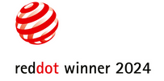

About me
Hi, I'm Sabrina! I'm a senior content designer and systems thinker with 7+ years of enterprise experience. I'm also a bit of a terminology nerd :]
My superpower: Organizing and delivering info so people can act on it.
I think in systems before sentences. That's because my journey started with a more structural approach: managing websites, organizing knowledge bases, and writing technical documentation before I ever wrote a line of UX copy.
Today, I'm able to bring that full stack of experience to content design, where structure, clarity, and user empathy all have to work together.
How I work
I'm at my best when working with cross-functional team members, and a lot of my work has actually been about bridging gaps:
- Between engineers and designers
- Between global PMs and UX writers who'd never met before
- Between a product's internal logic and the mental model of the person actually using it
I find that the most interesting content problems live in these gaps, and that's where I really thrive.
And (surprise, surprise!) I have a penchant for documenting pretty much anything I touch. Being embedded in every stage of content, from marketing to post-sales support, has taught me the true business value of sharing context and decisions across teams.
Skills
Recognition
Knox Design System
Knox Manage
-
UX Design Award UX Design Awards · 2024
-

Red Dot Award Red Dot · 2024 -
iF Design Award iF Design · 2024
Samsung Members Canada
When I moderated the Samsung Members Canada community, a few members shared these unofficial awards with me. I keep them near and dear to my heart as a reminder of why I always write for users.
Outside of work
You can usually find me: (a) hyperfixating on my latest crafting obsession, (b) glued to a science fiction book, or (c) trying out some new activity I need to wear a helmet for.
Let's just say I have a lot of hobbies I've accumulated over the years!